Markdown Plus giúp bạn đọc file Markdown ngay trong Chrome, với mục lục, danh sách file và các công cụ làm việc ngay bên cạnh tài liệu. Bạn có thể làm theo từ đầu hoặc chọn một mục trong hướng dẫn để xem tính năng mình đang cần.
Ảnh trong hướng dẫn được chụp từ giao diện hiện tại của extension, dùng tài liệu và trạng thái mẫu. Các nút trong ảnh dùng cùng ngôn ngữ với trang hướng dẫn; nội dung mẫu giữ nguyên tiếng Anh. Nhấn vào ảnh để xem rõ hơn. Tên nút trong hộp thoại của Chrome tùy thuộc ngôn ngữ trình duyệt.
Cài đặt và mở file đầu tiên
Bạn chỉ cần cài tiện ích, cấp quyền đọc file trên máy rồi mở một file Markdown bằng Chrome. Sau đó có thể đọc ngay hoặc tiếp tục thử các tính năng bên dưới.
- Mở trang Chrome Web Store chính thức ở liên kết bên trên. Chọn Thêm vào Chrome, rồi xác nhận Thêm tiện ích. Máy cần dùng Chrome 116 trở lên.
- Nhập
chrome://extensionsvào thanh địa chỉ. Tìm Markdown Plus → Chi tiết (Details), rồi bật Cho phép truy cập vào URL của tệp (Allow access to file URLs). Đây là quyền cần có để tiện ích đọc tài liệu trên máy. - Kéo file Markdown vào một tab Chrome, hoặc dùng phím tắt bên dưới để chọn file. Bạn có thể mở trực tiếp các file
.md,.markdown,.mdownvà.mdc. Nếu đã mở file trước khi cấp quyền, hãy tải lại tab. - Ghim Markdown Plus trong menu Tiện ích của Chrome để dễ mở lại. Nhấn biểu tượng tiện ích trên thanh công cụ: bạn sẽ thấy các tab Đọc, Soạn thảo, Tính năng và Gần đây.
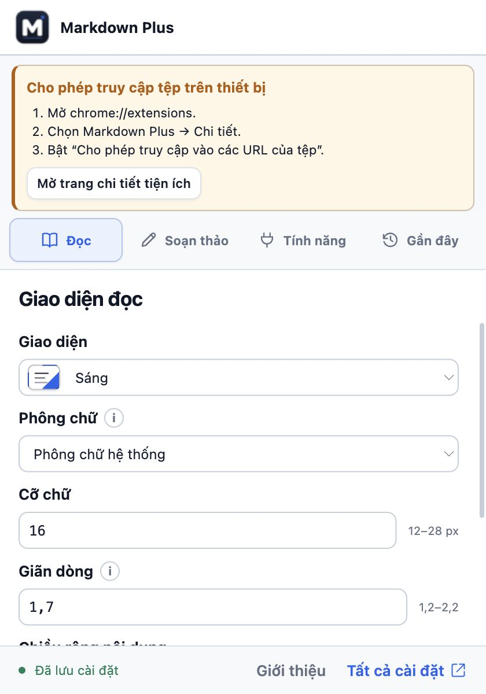
Xem ảnh đầy đủThử ngay với file mẫu
Tải markdown-plus-tour.md về máy rồi mở bằng Chrome. Trong file có tiêu đề, checklist, bảng, code, ghi chú, công thức và sơ đồ Mermaid để bạn thử từng tính năng. Nội dung mẫu bằng tiếng Anh.
Duyệt file và dùng mục lục
Bảng Tệp bên trái dùng để mở tài liệu khác. Mục lục bên phải giúp bạn nhảy đến từng phần; hàng icon phía trên là các thao tác với tài liệu. Muốn có thêm chỗ đọc, hãy thu gọn hoặc kéo mép bảng để đổi chiều rộng.
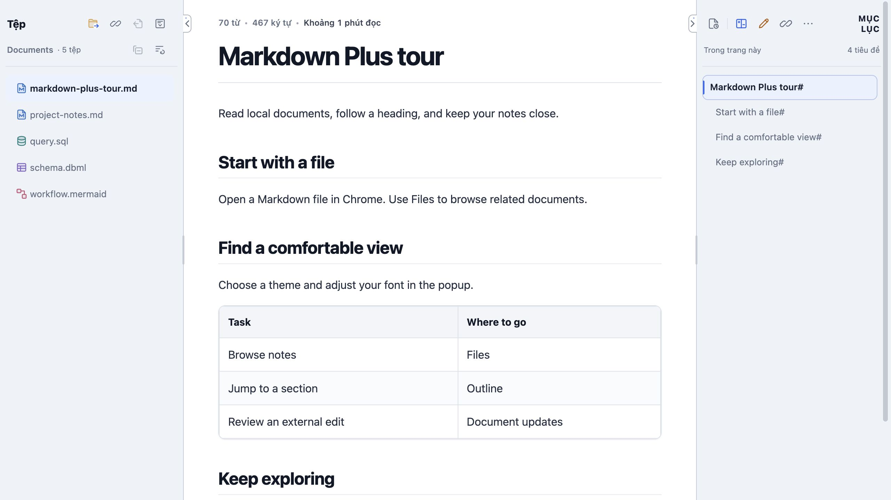
Xem ảnh đầy đủNhìn nhanh các khu vực
- Tệp — mở tài liệu hoặc thư mục khác.
- Vùng giữa — đọc nội dung tài liệu.
- Mục lục — chuyển nhanh đến từng heading.
- Hàng icon — cập nhật, chỉnh sửa, in và xuất file.
Mở cả thư mục
Trong bảng Tệp, nhấn Mở thư mục… rồi chọn thư mục ghi chú hoặc tài liệu dự án. Cho phép truy cập khi Chrome hỏi. Sau đó mở các thư mục con và chọn file cần đọc. Chrome có thể yêu cầu cấp quyền lại ở phiên làm việc sau.
Vừa thêm, xóa hoặc đổi tên file? Nhấn Làm mới danh sách tệp để quét lại danh sách. Nút này chỉ cập nhật cây thư mục. Nếu vẫn thiếu file, kiểm tra .gitignore và giới hạn quét trong Tất cả cài đặt → Tệp và thư mục làm việc, rồi làm mới lần nữa.
Nhấn một tiêu đề trong Mục lục để chuyển đến phần tương ứng. Danh sách này được tạo từ các heading trong Markdown. Khi cửa sổ hẹp, mở nút ba chấm ở hàng thao tác để tìm các lệnh đã được thu gọn.
| Loại tệp | Cách mở |
|---|---|
.md · .markdown · .mdown · .mdc | Kéo vào Chrome để mở trực tiếp, hoặc chọn trong bảng Tệp. |
.txt · .sql · .dbml · .mermaid | Mở một file Markdown trước, rồi chọn file này trong bảng Tệp. |
| Hình ảnh | PNG, JPG/JPEG, GIF, WebP, AVIF, BMP, ICO, APNG và SVG. Mở từ bảng Tệp. |
TXT hiển thị văn bản thuần; SQL và DBML hỗ trợ tô màu cú pháp. DBML hiện dùng để xem mã nguồn, chưa có chức năng vẽ sơ đồ cơ sở dữ liệu. Các file này chỉ đọc. File Mermaid có thể chuyển giữa sơ đồ và source; Markdown có thêm mục lục, chỉnh sửa thử nghiệm và xuất tài liệu.
Tìm trong tài liệu hoặc nhiều tệp
Luồng tìm kiếm này đã có trong mã nguồn đang phát triển nhưng chưa được gán phiên bản phát hành. Chưa xác minh tính năng đã có trong gói trên Chrome Web Store.
Nhấn Cmd/Ctrl + F để tìm trong nội dung đang đọc. Khi con trỏ nằm trong trình soạn thảo, phím tắt mở chức năng tìm/thay thế của trình soạn thảo. Muốn tìm trên toàn trang, gồm chữ đang hiển thị ở sidebar, dùng menu của Chrome; trình duyệt không tìm được các dòng chưa được đưa lên trang.
Nhấn kính lúp trong bảng Tệp, hoặc Ctrl + Shift + F, để tìm nội dung các tệp văn bản được hỗ trợ trong thư mục làm việc hiện tại. Trên macOS cũng dùng Control, không dùng Command. Nếu bảng Tệp đã có phạm vi tìm kiếm, bạn không cần chọn lại thư mục. Chỉ vùng cây thư mục chuyển sang tìm kiếm, phần đầu bảng giữ nguyên. Kết quả gồm bản sửa chưa lưu đang mở và các tệp trong thư mục con, theo quy tắc loại trừ và giới hạn quét hiện tại.
Có thể kết hợp Aa — Phân biệt hoa/thường, ab — Khớp nguyên từ và Á — Phân biệt dấu. Mặc định không phân biệt hoa/thường, tìm cả một phần trong từ và có phân biệt dấu. Tắt phân biệt dấu để hai tìm được hải, hoặc duong tìm được đường. Chưa hỗ trợ biểu thức chính quy.
Tìm trên nhiều tệp bắt đầu sau khi ngừng gõ 250 ms; Enter trong ô từ khóa chạy ngay. Trong lúc chờ, các dòng kết quả cũ vẫn hiển thị nhưng không thể mở. Kết quả nhóm theo tệp, có số dòng và đoạn trích ngắn. Mở kết quả để đánh dấu vị trí trong nội dung; focus bàn phím vẫn ở danh sách. Dùng F4, hoặc Shift + F4, để mở kết quả tiếp/trước đang hiển thị. Kết quả nằm trong cú pháp Markdown bị ẩn có thể mở ở khung xem nội dung nguồn chỉ đọc. Màu vàng đánh dấu các kết quả, màu cam là kết quả hiện tại.
Tìm kiếm dùng lại nội dung và dữ liệu Unicode trong bộ nhớ tạm có giới hạn; việc so khớp chạy trong Worker cục bộ. Tìm lại bỏ qua bộ nhớ tạm của danh sách hiện có, còn Làm mới danh sách tệp cập nhật tệp vừa thêm, xóa hoặc đổi tên. Nếu thư mục được mở dưới dạng bản chụp, cần chọn lại thư mục để lấy nội dung mới trên đĩa. Tính năng không theo dõi liên tục mọi tệp và không lưu chỉ mục nội dung lâu dài.
Tệp lớn hơn 2 MiB, lượt tìm đạt 2.000 kết quả hoặc hết ngân sách xử lý 15 giây có thể khiến kết quả chưa đầy đủ. Xem thông báo, thu hẹp từ khóa hoặc làm mới khi cần. Không tìm nội dung trong ảnh.
Chỉnh giao diện cho dễ đọc
Nhấn biểu tượng Markdown Plus rồi mở tab Đọc. Chọn giao diện, chỉnh cỡ chữ, giãn dòng và chiều rộng đến khi thấy thoải mái. Các lựa chọn này được dùng chung cho những tài liệu bạn mở.
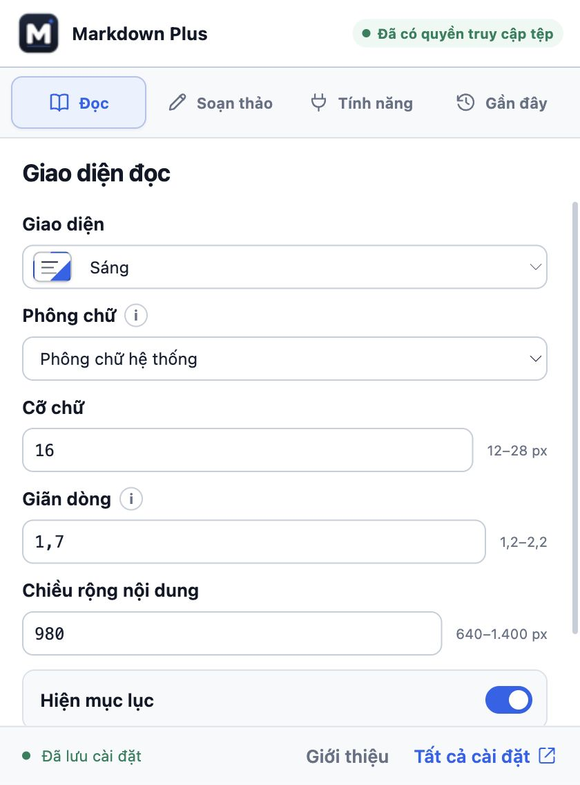
Xem ảnh đầy đủChọn phông và cỡ chữ
Bạn có thể chọn cỡ chữ 12–28 px và giãn dòng 1,2–2,2. Các lựa chọn phông dùng font đã cài trên máy; nếu không có font đó, tiện ích sẽ dùng font thay thế.
Chỉnh chiều rộng và các bảng bên
Chiều rộng nội dung có thể đặt từ 640–1400 px. Bật hoặc tắt Hiện mục lục tùy nhu cầu. Trong mục Chung, bạn còn có thể ẩn thống kê hoặc đổi cách hiển thị thanh cuộn. Thống kê gồm số từ, số ký tự tính cả khoảng trắng và thời gian đọc ước tính.
Muốn đưa phần đọc về mặc định, dùng nút Khôi phục giao diện đọc. Để đổi ngôn ngữ, mở Tất cả cài đặt → Chung → Ngôn ngữ giao diện. Đổi ngôn ngữ của tiện ích sẽ không dịch nội dung tài liệu.
Với tài liệu dài, nút Về đầu trang giúp bạn quay lại phần đầu. Việc đổi giao diện, phông chữ hay bố cục chỉ thay cách hiển thị; file Markdown trên máy vẫn giữ nguyên.
Code, bảng và các kiểu nội dung
Ngoài tiêu đề và đoạn văn, bạn có thể xem code có tô màu, bảng, checklist, công thức và nhiều kiểu ghi chú. Các tính năng đều bật sẵn; mở tab Tính năng trong bảng tiện ích để bật hoặc tắt từng mục.
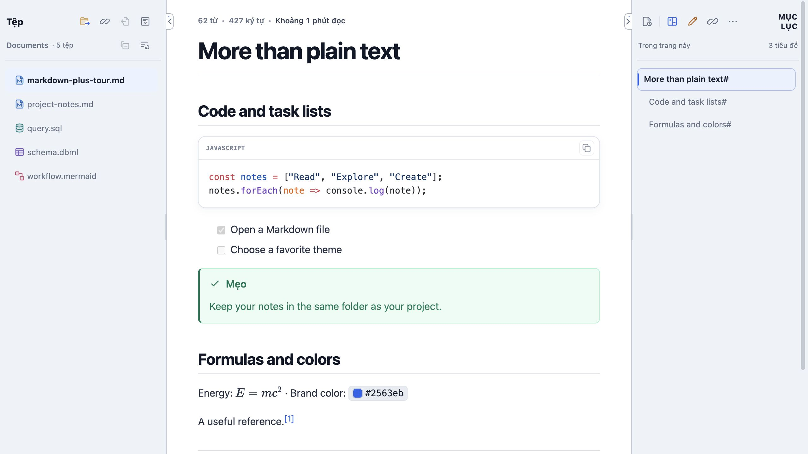
Xem ảnh đầy đủCode và bảng
Khối code có nút sao chép và tô màu cú pháp. Ghi tên ngôn ngữ ngay sau dấu mở khối code, chẳng hạn javascript, để được tô màu đúng. Bảng cũng được định dạng lại cho dễ đọc.
Checklist, ghi chú và footnote
Markdown Plus hỗ trợ ghi chú kiểu GitHub, footnote, emoji và liên kết đến heading. Checklist trong chế độ đọc chỉ để xem: muốn đánh dấu xong hoặc bỏ dấu, hãy sửa nội dung Markdown.
Công thức và mã màu
KaTeX hiển thị công thức ngay trong dòng hoặc thành một khối riêng. Tính năng xem trước màu hiển thị ô màu cạnh mã màu được hỗ trợ; nhấn ô đó để sao chép HEX, RGB hoặc HSL.
## A small plan
- [x] Open a Markdown file
- [ ] Try a new theme
> [!TIP]
> Keep your notes close to your code.
Inline math: $E = mc^2$
A useful color: #2563ebBật hoặc tắt từng tính năng
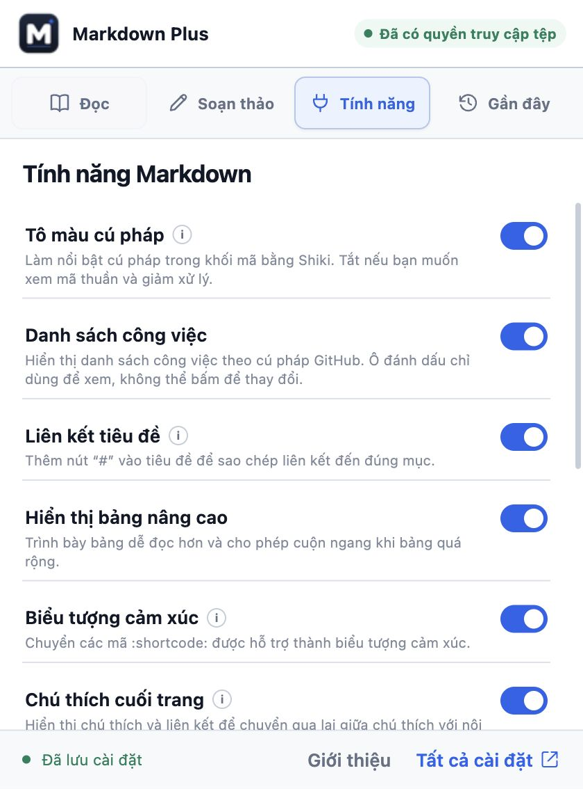
Xem ảnh đầy đủ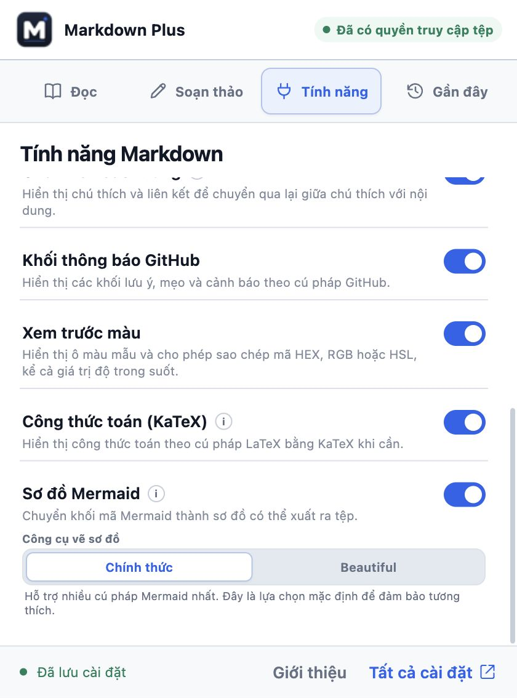
Xem ảnh đầy đủTrong file mẫu, tìm mục “A diagram”, thử sao chép khối JavaScript rồi xem công thức và màu #2563eb. Nếu phần nào chưa hiển thị đúng, mở tab Tính năng và kiểm tra mục tương ứng.
Xem sơ đồ và hình ảnh
Khối code ghi ngôn ngữ mermaid sẽ được hiển thị thành sơ đồ khi tính năng Mermaid đang bật. Bạn cũng có thể mở file .mermaid từ bảng Tệp và chuyển giữa sơ đồ với source.
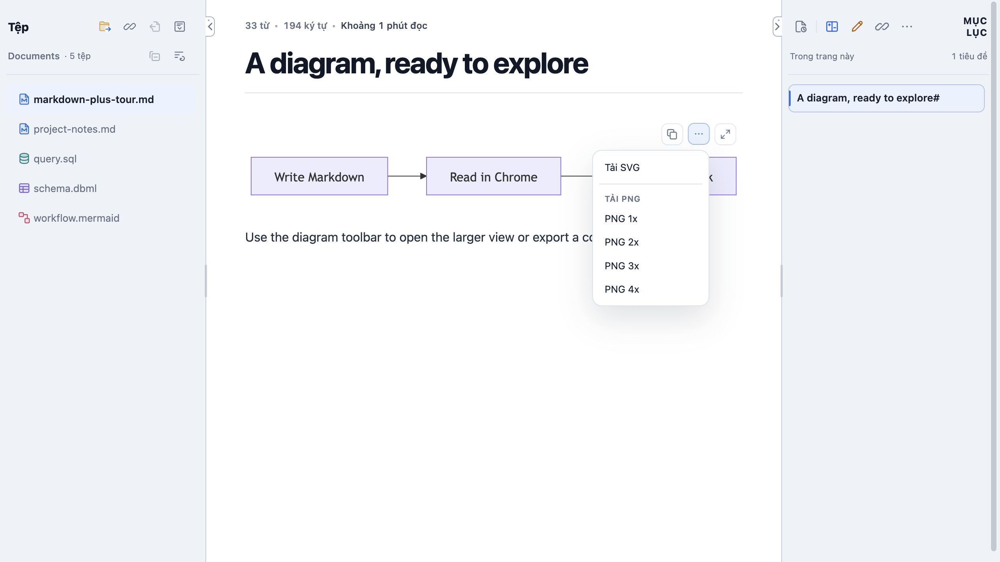
Xem ảnh đầy đủ- Nhấn nút mở rộng trên sơ đồ hoặc ảnh để xem lớn. Bạn có thể thu phóng, đưa ảnh vừa khung hoặc kéo để xem chi tiết. Đóng cửa sổ này để trở lại tài liệu.
- Với Mermaid, bạn có thể sao chép source hoặc tải sơ đồ dạng SVG, PNG. PNG có các mức 1×–4×. Chọn SVG nếu cần ảnh vector; tăng mức PNG nếu cần ảnh có nhiều pixel hơn.
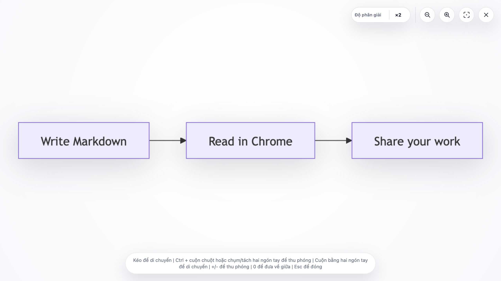
Xem ảnh đầy đủTrong cửa sổ xem lớn của Mermaid và SVG, Độ phân giải giúp tăng độ nét độc lập với mức zoom. Di chuột, dùng bàn phím hoặc chạm vào nút để hiện dấu trừ/cộng. Mỗi lần thay đổi 0,25, từ 1× đến tối đa 8×, tùy kích thước ảnh và giới hạn bộ nhớ. Khi hiện Tối đa, bạn đã đạt giới hạn của ảnh đó. Thay đổi này chỉ áp dụng cho cửa sổ xem hiện tại, không đổi file gốc hay file xuất.
Trong bảng tiện ích → Tính năng, chọn Chính thức để hỗ trợ nhiều cú pháp Mermaid nhất; Beautiful cho một kiểu trình bày khác. Nếu Beautiful không vẽ được sơ đồ, thử chuyển về Chính thức và kiểm tra lại cú pháp.
Giao diện và hình nền
Chọn giao diện có sẵn trong bảng tiện ích → Đọc → Giao diện, hoặc mở Tất cả cài đặt → Giao diện. Có các lựa chọn sáng, tối, tương phản cao và nhiều bảng màu khác; phông chữ, giãn dòng, chiều rộng được chỉnh riêng.
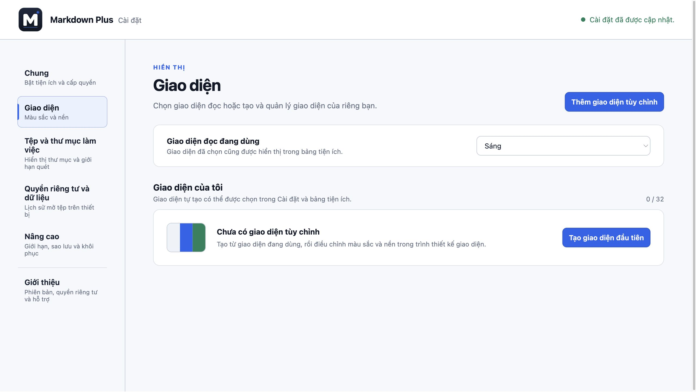
Xem ảnh đầy đủTạo giao diện theo ý bạn
- Nhấn Thêm giao diện tùy chỉnh, đặt tên và chọn Giao diện gốc. Nên chọn giao diện gốc trước vì đổi mục này sẽ đặt lại các màu bạn đang chỉnh.
- Chỉnh màu trang, nền nội dung, bảng bên, chữ, tiêu đề và liên kết. Nhìn bản xem trước bên cạnh để kiểm tra chữ có dễ đọc không, nhất là chữ nhỏ và chữ nhạt.
- Trong Màu cú pháp mã nguồn, chọn bộ màu cho các khối code hoặc giữ theo giao diện gốc. Lựa chọn này dành cho code được hiển thị trong tài liệu.
- Chọn kiểu nền, chỉnh cách hiển thị và độ tối nếu cần. Cuối cùng bấm Tạo giao diện hoặc Lưu thay đổi. Mọi chỉnh sửa vẫn là bản nháp cho đến khi bạn lưu.
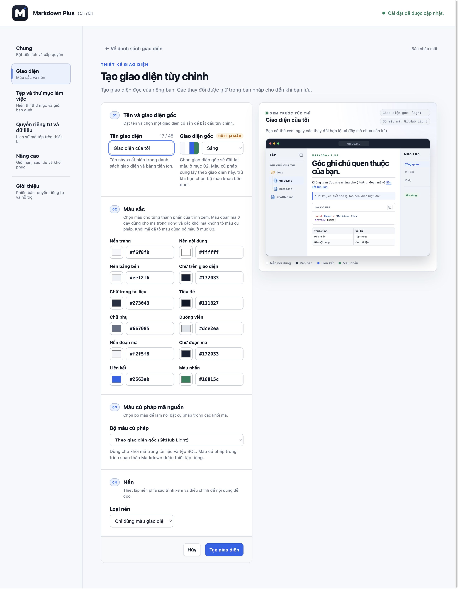
Xem ảnh đầy đủMàu nền, gradient hoặc ảnh của bạn
Bạn có thể giữ nền của giao diện, chọn một màu, tạo gradient hai màu hoặc dùng ảnh trên máy. Ảnh hỗ trợ PNG, JPEG, WebP, AVIF, GIF, APNG, tối đa 5 MiB. Với ảnh nền, bạn có thể chỉnh cách vừa khung, vị trí và lặp ảnh; tăng độ tối nền nếu chữ khó đọc.
Chọn Theo hệ thống, Bật chuyển động hoặc Tắt chuyển động. Theo hệ thống sẽ tôn trọng tùy chọn giảm chuyển động trên máy. Tắt chuyển động sẽ ẩn nền ảnh động chứ không dừng ở một khung hình.
Theo dõi và xem thay đổi
Khi bạn sửa file bằng VS Code hay ứng dụng khác rồi lưu lại, Markdown Plus có thể kiểm tra và mở nội dung mới. Chọn cách cập nhật tại Tất cả cài đặt → Chung → Cập nhật tài liệu.
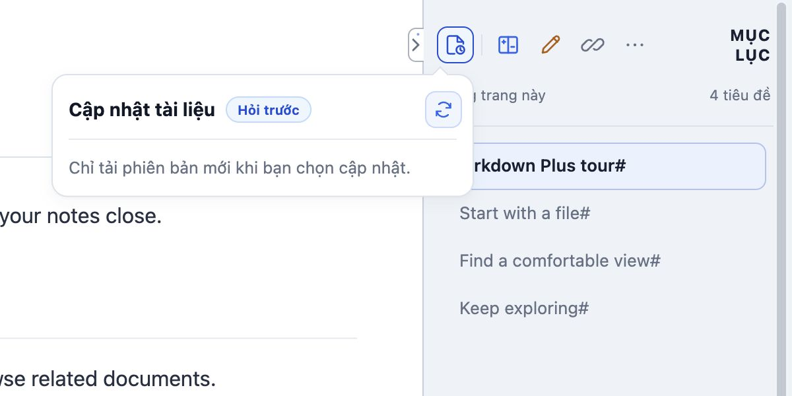
Xem ảnh đầy đủ| Chế độ | Cách hoạt động |
|---|---|
| Hỏi trước — mặc định | Tiện ích kiểm tra thay đổi và chờ bạn bấm cập nhật. Chọn cách này nếu muốn xem lại nội dung mới trước khi thay phần đang đọc. |
| Tự động | Tải bản mới khi file đã ghi ổn định và bạn tạm ngừng thao tác, đồng thời cố gắng giữ vị trí đang đọc. |
| Tắt | Không tự kiểm tra. Bạn vẫn có thể bấm Kiểm tra ngay khi cần. |
Mở Cập nhật tài liệu ở hàng icon của trình đọc để kiểm tra hoặc tải bản mới. Khi có dữ liệu so sánh, nhấn Xem thay đổi để xem các dòng được thêm hoặc xóa. Với Markdown, bạn còn thấy mục nào bị ảnh hưởng. Ảnh có thể cập nhật nhưng không có phần so sánh source.
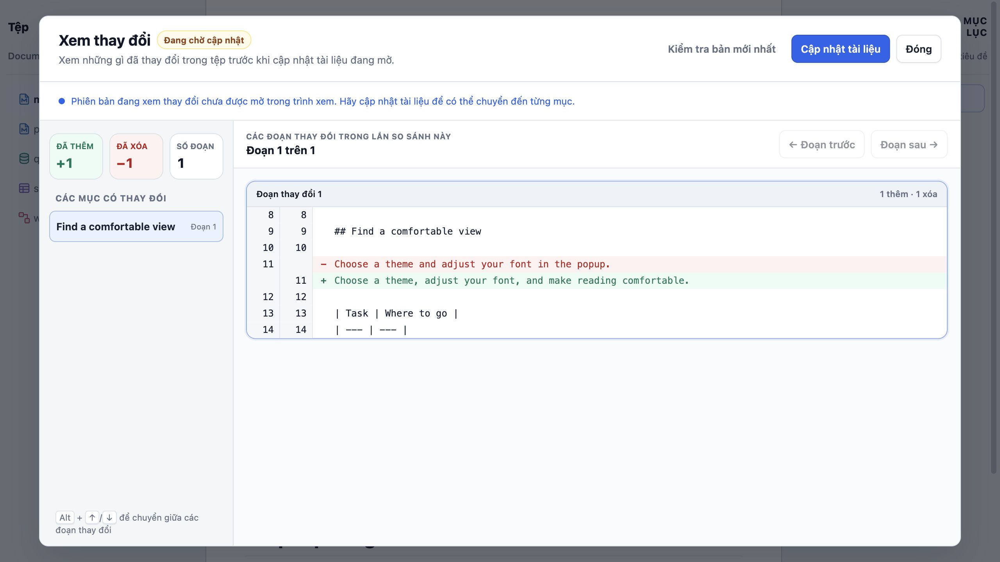
Xem ảnh đầy đủCửa sổ so sánh giữ nguyên nội dung đang xem cho đến khi bạn bấm Xem bản mới nhất. Nếu dùng chế độ Tự động, tài liệu phía sau vẫn có thể cập nhật trong lúc bạn xem diff. Muốn tự quyết định thời điểm cập nhật, hãy chọn Hỏi trước.
Chỉnh sửa Markdown
Tính năng thử nghiệm · Mặc định tắt
Bạn có thể sửa Markdown ngay trong Chrome, với source ở một bên và bản xem trước ở bên còn lại. Để dùng, hãy bật trình soạn thảo và chọn lại đúng file gốc trước khi lưu.
- Mở bảng tiện ích → Soạn thảo và bật trình soạn thảo. Quay lại tài liệu Markdown, nhấn icon bút chì Chỉnh sửa Markdown.
- Trong hộp thoại, bấm Chọn tệp và chỉnh sửa. Chọn đúng file đang mở, kiểm tra cả tên file lẫn thư mục. Bước này giúp tiện ích xác minh file gốc và xin quyền lưu vào đó.
- Sửa nội dung trong khung code và xem kết quả bên cạnh. Có sẵn tìm và thay thế; chế độ tập trung sẽ ẩn phần xem trước. Tab Soạn thảo cho phép đổi cỡ chữ, độ rộng tab, tự xuống dòng và số dòng.
- Bấm Lưu hoặc nhấn Ctrl + S / ⌘ + S. Chờ thông báo lưu thành công rồi mới rời trang. Khi muốn in hoặc xuất tài liệu, thoát chế độ chỉnh sửa trước.
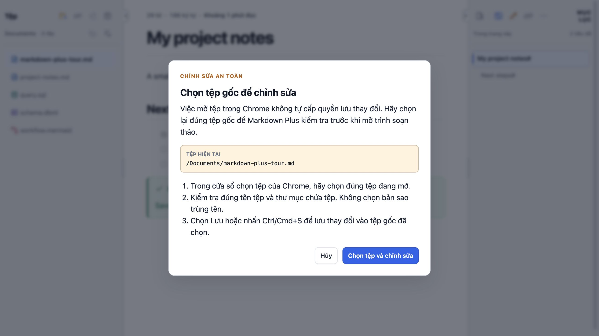
Xem ảnh đầy đủ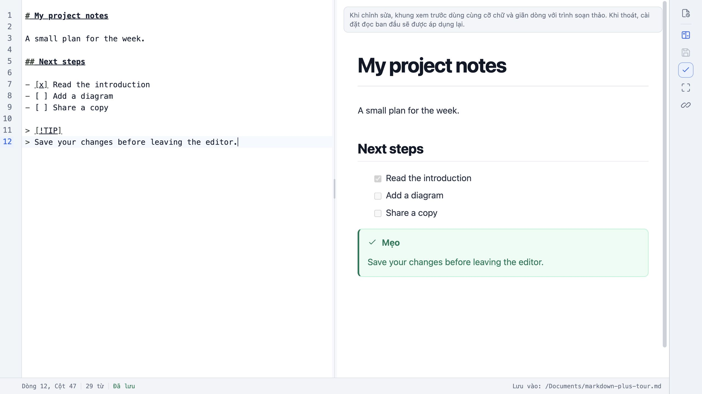
Xem ảnh đầy đủIn, xuất và chia sẻ
Bạn có thể in tài liệu, lưu PDF hoặc xuất một bản HTML/Word để gửi cho người khác. Các lệnh nằm trong hàng thao tác; nếu cửa sổ hẹp, hãy mở menu ba chấm.
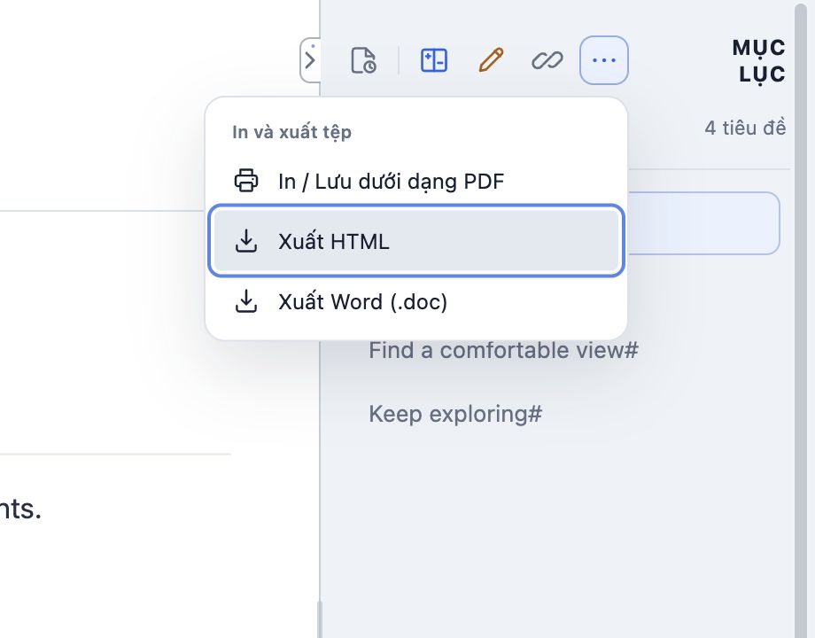
Xem ảnh đầy đủIn hoặc lưu PDF
Chọn In / Lưu dưới dạng PDF. Trong hộp thoại in của Chrome, chọn máy in hoặc Lưu dưới dạng PDF. Kiểm tra bản xem trước, khổ giấy và lề trước khi lưu.
Xuất tài liệu Markdown
Với tài liệu Markdown, chọn Xuất HTML hoặc Xuất Word (.doc). Tùy độ rộng cửa sổ, hai lệnh này có thể nằm trong menu Xuất tài liệu hoặc menu ba chấm. File .doc có thể mở bằng Word; xuất sơ đồ SVG/PNG dùng menu riêng ngay trên sơ đồ.
Hãy thoát chế độ chỉnh sửa trước khi in hoặc xuất. Tài liệu được xử lý trong trình duyệt, nhưng ảnh hay tài nguyên từ xa trong tài liệu vẫn có thể kết nối đến nơi lưu chúng. Một số tài nguyên của bản HTML xuất ra có thể tải từ CDN.
Đọc chính sách quyền riêng tưCài đặt và sao lưu
Nhấn Tất cả cài đặt ở cuối bảng tiện ích để mở trang cài đặt đầy đủ. Công tắc và danh sách chọn thường lưu ngay. Các giới hạn dạng số dùng nút Lưu thay đổi; giao diện tự tạo cũng có nút lưu riêng.
- Chung: ngôn ngữ, bật/tắt tiện ích, thanh cuộn, thống kê, cách cập nhật tài liệu và trạng thái quyền mở file. Quyền mở file phải bật trong trang Chi tiết của Chrome.
- Tệp và thư mục làm việc: đường nối cây thư mục, loại trừ theo
.gitignore, mở lại thư mục lần trước và giới hạn quét. Độ sâu 0 chỉ quét ngay trong thư mục gốc bạn chọn. Đổi giới hạn rồi quét hoặc làm mới để áp dụng. - Quyền riêng tư và dữ liệu: bật ghi nhớ file gần đây, chọn số lượng lưu lại hoặc xóa danh sách. Tab Gần đây giúp mở lại file Markdown đã xem. Xóa danh sách chỉ xóa lịch sử, không xóa file trên máy.
- Nâng cao: giới hạn dung lượng khi xem file TXT, SQL, DBML và Mermaid, có hiệu lực từ lần mở tiếp theo. Giới hạn này không áp dụng cho Markdown và tách biệt với mức 5 MiB của tính năng cập nhật.
- Giới thiệu: phiên bản đang cài, thông tin tương thích và các link hỗ trợ. Khi báo lỗi, bạn có thể lấy số phiên bản tại đây.
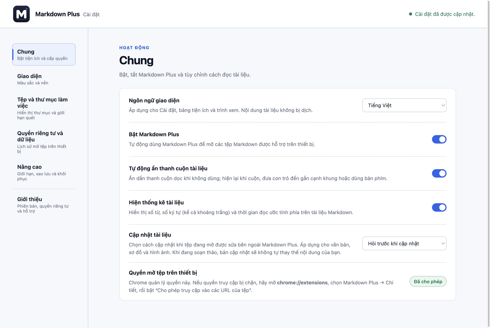
Xem ảnh đầy đủSao lưu và khôi phục cài đặt
Trong Nâng cao, bấm Xuất JSON để tải bản sao lưu. Khi cần khôi phục, dùng Chọn tệp JSON ở mục Nhập cài đặt; tiện ích sẽ kiểm tra file trước khi lưu. Bản sao lưu có các tùy chọn và giao diện tự tạo, không gồm tài liệu, lịch sử file hay ảnh nền.
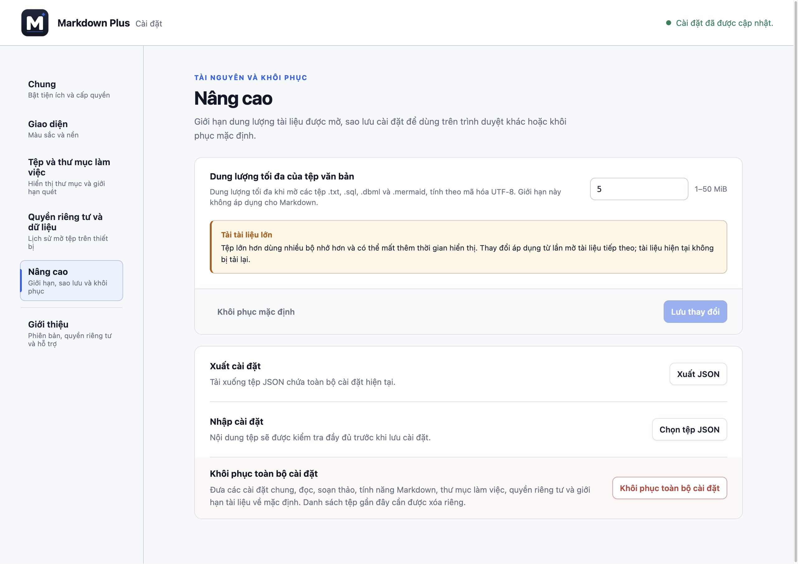
Xem ảnh đầy đủTài liệu được xử lý ngay trong trình duyệt, không tải lên máy chủ của nhà phát triển. Tùy chọn có thể đồng bộ qua Chrome; lịch sử đường dẫn, quyền lưu file và ảnh nền được giữ trên thiết bị. Nút sáng/tối của website chỉ đổi giao diện website này.
Lỗi thường gặp
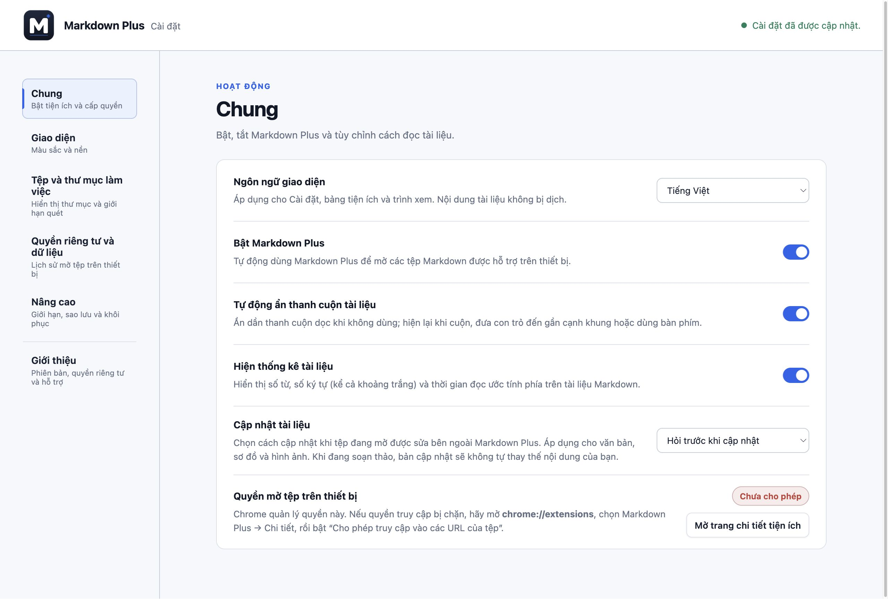
Xem ảnh đầy đủFile Markdown vẫn hiện chữ thô, phải làm sao?
Vào chrome://extensions → Markdown Plus → Chi tiết và bật Cho phép truy cập vào URL của tệp. Kiểm tra Tất cả cài đặt → Chung → Bật Markdown Plus, xác nhận file có đuôi .md, .markdown, .mdown hoặc .mdc, rồi tải lại tab.
Có đọc Markdown trên website hoặc mở SQL trực tiếp được không?
Tiện ích tự mở với file Markdown trên máy. Nếu tài liệu ở trên mạng, hãy tải về rồi mở bản đã tải. Với SQL, DBML, TXT, Mermaid và ảnh, mở một file Markdown trước rồi chọn file cần xem trong bảng Tệp.
Vì sao không thấy đủ file trong danh sách?
Kiểm tra .gitignore và giới hạn độ sâu, số file, số thư mục ở Tệp và thư mục làm việc, rồi nhấn Làm mới danh sách tệp. Cấp lại quyền nếu Chrome yêu cầu. File trong Gần đây đã chuyển chỗ thì cần mở lại từ vị trí mới.
Đã sửa và lưu ở ứng dụng khác nhưng nội dung vẫn cũ?
Mở Cập nhật tài liệu → Kiểm tra ngay. Nếu dùng Hỏi trước, bạn cần bấm cập nhật để mở bản mới. Giữ tab hiển thị và kiểm tra file không quá 5 MiB. Làm mới danh sách tệp chỉ quét lại thư mục. Nếu đang dùng bản chụp thư mục, hãy chọn lại thư mục.
Bấm Lưu nhưng báo file đã thay đổi?
File gốc đã bị ứng dụng khác sửa sau khi bạn bắt đầu soạn thảo. Sao chép phần nháp cần giữ, xem lại bản trên đĩa rồi mở lại đúng file để tiếp tục. Tiện ích không ép ghi đè khi có xung đột. Nếu lỗi liên quan đến quyền truy cập, kiểm tra lại quyền ghi file.
Sao sang máy khác lại mất ảnh nền?
Ảnh nền không được đồng bộ hoặc gộp vào bản sao lưu JSON. Trên máy mới, sửa giao diện, chọn lại ảnh gốc rồi lưu.
Vì sao cài đặt không lưu được?
Đọc thông báo ở phần trạng thái để biết lỗi cụ thể. Nếu vừa thay đổi quá nhanh, chờ một chút rồi thử lại. Nếu bộ nhớ cài đặt của Chrome đã đầy, giảm dữ liệu giao diện tự tạo hoặc xóa giao diện không dùng, rồi lưu lại.
Nếu vẫn gặp lỗi, hãy gửi issue kèm phiên bản Chrome, phiên bản tiện ích, các bước dẫn đến lỗi và file ví dụ nhỏ đã bỏ thông tin riêng tư.
Gửi câu hỏi hoặc báo lỗi trên GitHubGiờ hãy thử với tài liệu của bạn.
Mở một file Markdown, chỉnh cho dễ đọc và dùng thêm tính năng khi cần. Bạn luôn có thể quay lại hướng dẫn này để tra nhanh.
Về phần bắt đầu